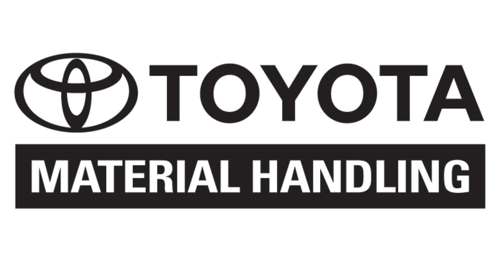
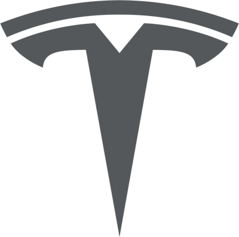

Ali Sabbagh.
I design, analyze, and test systems that connect physical theory with working hardware, from hydraulic test rigs to compliant robot legs.
.jpeg)
My engineering path
Industry and research, one approach: predict it, build it, test it. Select any stop to jump to the work.
-
Jan 2024
– Aug 2025Technical Research and DevelopmentGeorgia Tech Off Road (Baja SAE)Designed a custom engine mounting plate and overhauled a dynamometer testing fixture to evaluate power, torque, and efficiency, supporting eCVT sensor integration that lowered rotational inertia by 60%.
See projects ↓ -
Sep 2024President's Undergraduate Research Award
– Aug 2025MIST LabMicromachined Sensors & Transducers LabSimulated and fabricated MRI-compatible microcatheters.
See research ↓ -
Aug 2025
– Dec 2025 Analysis Led Design and Validation Co-opCummins Inc.
Analysis Led Design and Validation Co-opCummins Inc.Executed structural, modal, weld, and bolt joint analyses on Watlow Controller and ECM brackets, ensuring resonance-free 10g compliance. Automated batch data processing for 500+ engines with Python, cutting acquisition time by 83%, and assessed a manifold redesign for the QSK60 platform.
See projects ↓ -
May 2026
– Aug 2026
Test and Reliability Engineering InternshipToyota Material Handling North AmericaDesigned and built an automated electro-hydraulic test rig that simulates forklift hydraulic back-pressure and system heating within 3% accuracy. Drove the system with custom KiCad circuits and Arduino PWM control, then used nCode and MATLAB analysis to iteratively optimize heat dissipation.
See projects ↓ -
Jan 2026
– PresentCRAB LabCompliant leg mechanisms & legged robot locomotionDesigning compliant leg mechanisms to analyze robotic locomotion across complex terrain.
See research ↓ -
Jan 2027
– May 2027Incoming · Spring 2027
Analysis Engineering InternTesla · Crash Structures Analysis Team
Research
Two Georgia Tech labs: legged robot locomotion (CRAB, with a team study presented at APS 2026) and MRI-compatible microcatheters (MIST, PURA-funded).


Projects
Hardware, analysis, and automation, grouped by where the work happened.